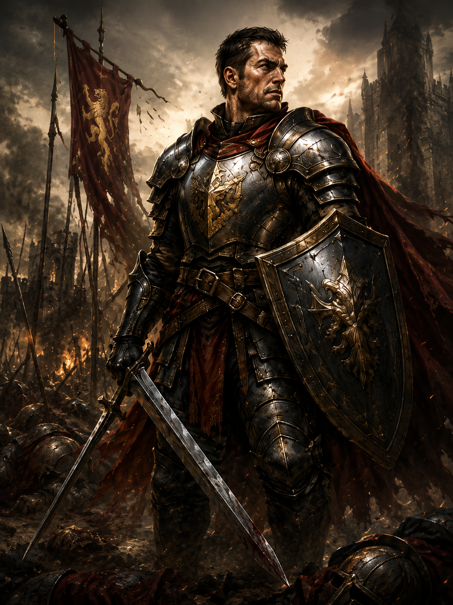
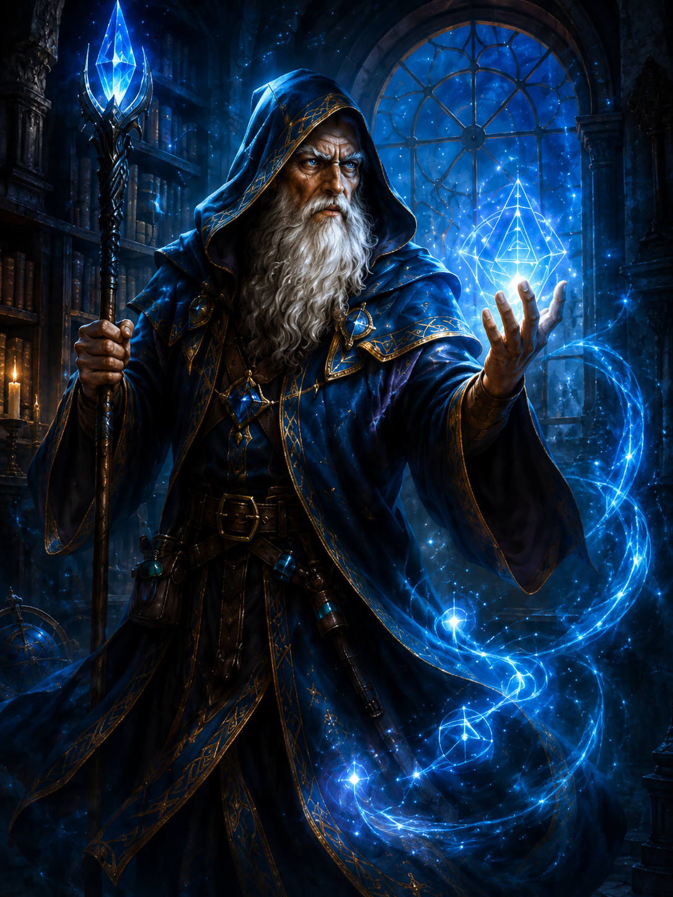
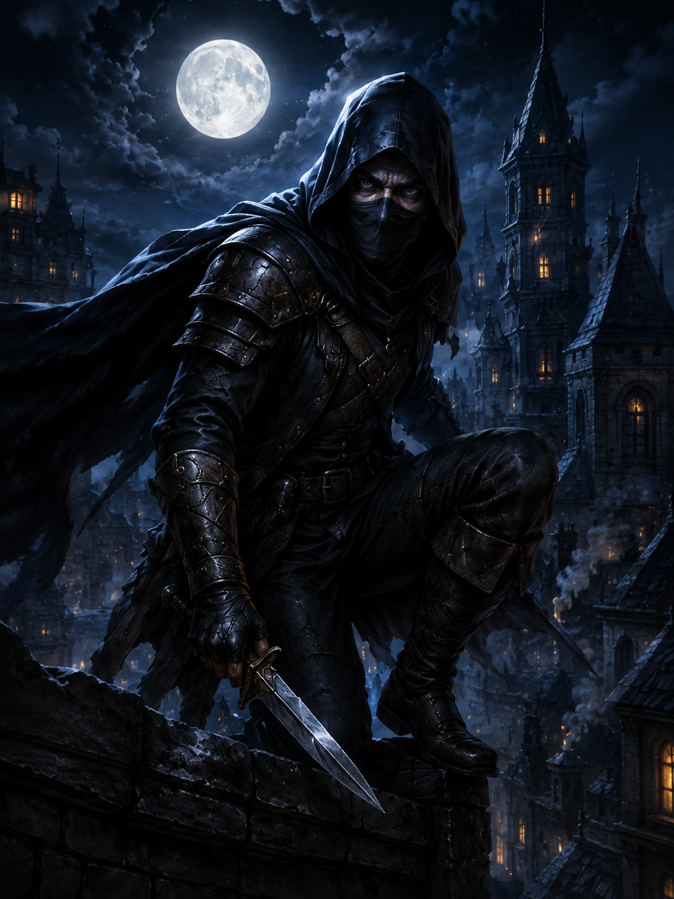

Guerreiro
Mestres na utilização de armas, os guerreiros são combatentes resistentes, com treinamento profissional em técnicas e estratégias de combate.
Criador de personagens
Escolha classe, atributos, origem, espécie, habilidades, equipamentos e magias em um fluxo guiado.

Mestres na utilização de armas, os guerreiros são combatentes resistentes, com treinamento profissional em técnicas e estratégias de combate.

Por meio de práticas incansáveis de estudo, os magos buscam entender e manipular os mistérios da magia, alterando a realidade das mais diversas formas.

Ágeis e precisos, os melhores ladinos só são vistos se assim o desejarem, podendo se tornar armas letais de assassinato e infiltração.
A fé inabalável dos clérigos permite-lhes canalizar os poderes de sua divindade, protegendo e curando seus aliados ou esmagando seus oponentes com fúria divina.
Aqui o jogador distribuirá os valores de Força, Destreza, Constituição, Inteligência, Sabedoria e Carisma.
Seu antecedente representa o lugar, a ocupação ou a experiência que mais marcou sua vida antes da aventura.
Você viveu ligado a um templo, ordem religiosa ou tradição espiritual.
Você aprendeu a sobreviver à margem da lei, usando furtividade, astúcia e contatos perigosos.
Você dedicou boa parte da vida ao estudo, à pesquisa e à busca por conhecimento.
Você recebeu treinamento militar e conhece disciplina, armas, hierarquia e os horrores da guerra.
Sua espécie determina suas características físicas e habilidades naturais.
Os humanos são uma espécie versátil e adaptável, com habilidades equilibradas em todos os aspectos.
Os anões são uma espécie resistente e trabalhadora, com habilidades em mineração e artesanato.
Os elfos são uma espécie ágil e longa-viva, com habilidades em arquearia e magia.
Os halflings são uma espécie pequena e agil, com habilidades em furtividade e adaptação.
Revise as escolhas do personagem antes de finalizar.

Aqui entrará um texto mais completo explicando como a classe funciona, quais são suas principais características e qual papel ela costuma ocupar dentro de uma aventura.
Recomendado para jogadores que gostam de combate direto, presença na linha de frente, resistência e uso estratégico de armas e armaduras (melhorar).
(Aqui entrarão os bônus, proficiências e habilidades da classe conforme as regras usadas pelo jogo.)